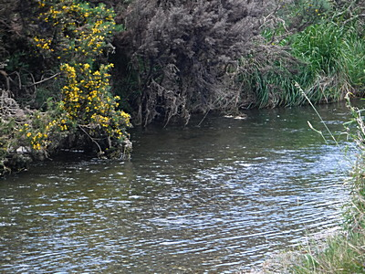
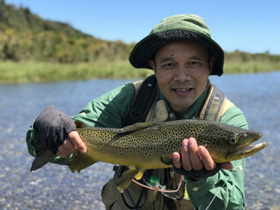
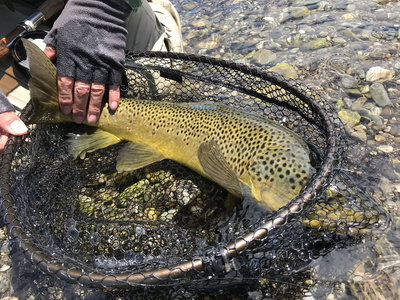
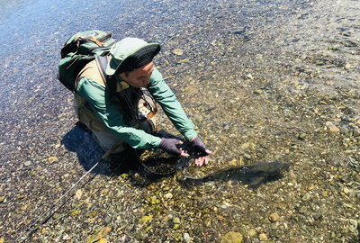

釣行日誌 ＮＺ編 「一期一会の旅：A Sentimental Journey」
何とか１尾釣り上げる
11/22(THU)-4
ちょうど昼過ぎ、右岸から小さな支流が合流しているポイントに出くわした。

「ゴウ、見えるか？ あそこの黄色の花の少し上、藪の下に居るぞ。」
少し腰をかがめて凝視すると、なるほど、40cm級が１尾定位している。細い支流だが、ある程度の流れはある。魚影は見えるがインジケーターの無いニンフフィッシングなので、合わせは完全にガイド頼りである。立ち位置を少し上流側に変えて、第１投を慎重に振り込む。１ｍほど上流の少し右に逸れて落ちた。ニンフが鱒の位置を流れ下ってから次のキャストに移ろうと、そのままラインを手繰り続けていると突然ディーンが
「ストライクッ！」
と叫ぶ。
『えっ！？』
と思いつつ反射的にロッドを立てるとドッシリとした手応え！ 何も見えなかったがなんとかフッキングしたようだ。下流へと突進する魚体を見てビックリ！55cmくらいはありそうだった。前回の釣行の反省にもとづき、ラインのテンションを常に保つようしっかりと右手で引っ張って強く保持する。8年前は、ラインを巻き取ってリールファイトに持ち込むことに気を取られ、テンションを失って何度もバラしてしまったのだ。このサイズならティペットの強度は十分だろう。あたりに障害物は無く、水流もほとんど無いので本流の広い水域で余裕を持って鱒をいなす。浅場まで寄せてくると、ディーンがバックパックからネットを取り外し、ドンピシャのタイミングですくい入れた。
「やった～！」
「Good man!」
ラグーンでは敗戦続きだったが、本流で今回釣行の１尾目を手中に収めることが出来た。
「その鱒、右に逸れたニンフを横に泳いで追い喰いしたぜ。」
と、さっきの状況をディーンが教えてくれた。



ネットの中に横たわるブラウンをしげしげと眺める。背中の張り出した、太って良いコンディションの１尾である。体色は背中が少々青みがかっているが、白銀色では無いので川に居着いたブラウンであろう。ディーンが何枚か iPhone で撮してくれたので、大事にリリースする。
その少し上流で、２尾目を上げる。やはり50cmクラスだった。これは写真も撮らずにリリースしたが、１尾目同様コンディションは良く、でっぷりと太っていた。
キャスティングに無駄な力は必要ないことは理解できるが、このサイズの鱒とのファイトにはある程度の腕力が必要とされる。この半年ほど、原因不明の左肘痛に悩まされ、今回の釣行にも温熱サポーターをはめて来ているが、心配した肘は問題無かった。しかし、肘と手首の間の筋肉が、力んだキャストの繰り返しと２尾の鱒とのファイトで、すでにズキズキ痛み始めた。まァ、嬉しい痛みではある。
だいぶ昼を過ぎていたので、とある分流点にたどり着いたところでランチタイムとなった。重いデイパックを下ろし、草むらに座り込む。ディーンがバックパックから魔法瓶を取り出し、インスタントのコーヒーを作ってくれる。ラップを開けて大きなサンドイッチにかぶりつく。ピクルスやレタスが美味しい。バターカップの小さな黄色の花が無数に咲き乱れる草地に風は無く、陽光は燦々と降り注ぎ、まだ腕に残る鱒の引きを感じながらのランチはまさに天国である。クラッカーにチーズを挟んだのもいただき、大粒のイチゴをつまみ、おなかは満たされた。今日のこの川は、サウス・ウェストランドにしては例外的にサンドフライの姿が見えない。嬉しい限りである。
さあ、次の鱒を探そう。
釣行日誌ＮＺ編 目次へ
サイトマップ
ホームへ
お問い合わせ